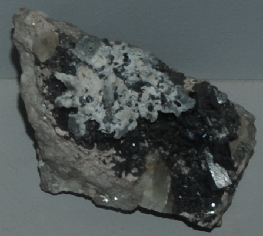

|

| Mn(OH)2
This sample of pyrochroite is displayed in the Smithsonian Museum of Natural History. Pyrochroite is a hydroxide of manganese with the composition Mn(OH)2 . This sample is about 8x5 cm and is from Langban Mine, Filipstad, Varmland, Sweden. It is described as pyrochroite with lead.
|